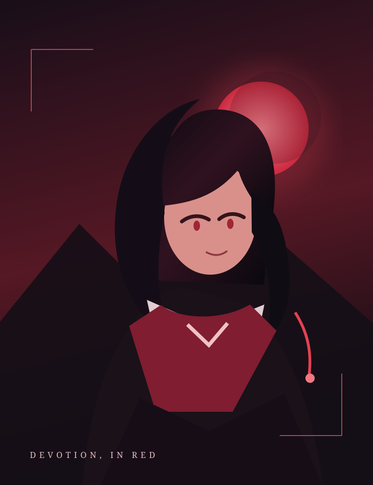

A FAN-MADE VISUAL ARCHIVE NO. 001—004
Love leaves
a mark.
A little corner of the internet for the beautiful, unsettling world of Redline Yandere. Browse the collection, get the details, keep the art.
EXPLORE THE COLLECTION ↓CURATED WITH OBSESSIONSCROLL TO DISCOVER ↓

REDLINE
YANDERE♡
YANDERE♡
01 / VELVET VOWORIGINAL CONCEPT ART
HER DEVOTION IS ABSOLUTE — 彼女の愛は永遠に
01
—
04
—
04
THE COLLECTION
Choose your poison.
Original concept visuals inspired by the game's dark-romance atmosphere. Select a piece to see its story and file details.
No pieces found. Try another search.
END OF CURRENT FILESMORE SECRETS, SOON ✳
“
A NOTE FROM THE ARCHIVIST
Some things are
better remembered.
This is an unofficial fan-made archive celebrating the mood and motifs of Redline Yandere. The artwork here is original concept imagery—not official game assets. Each file is free to download for personal use.
BACK TO THE ARTWORK ↑